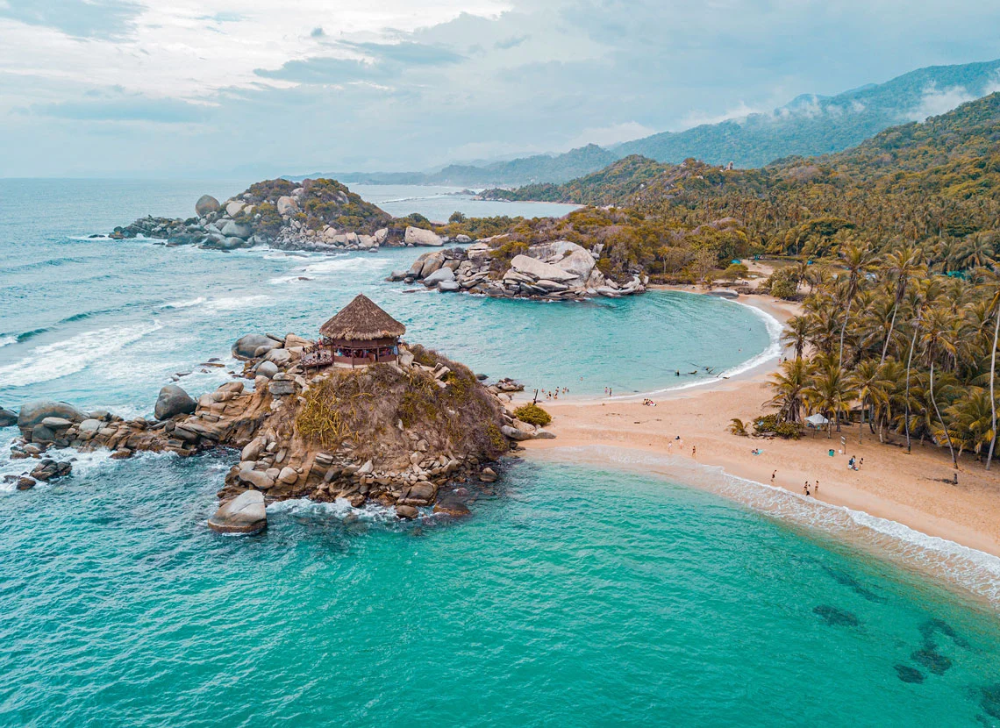
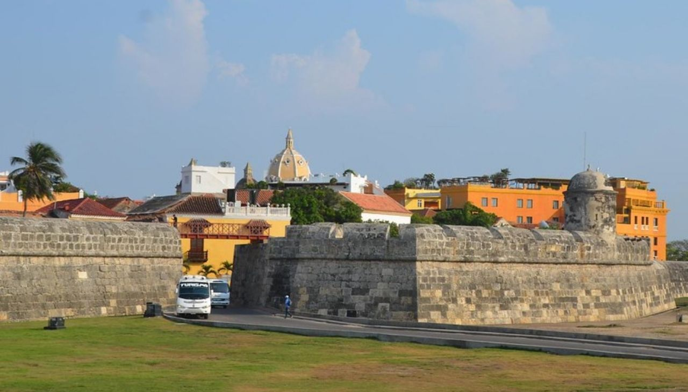
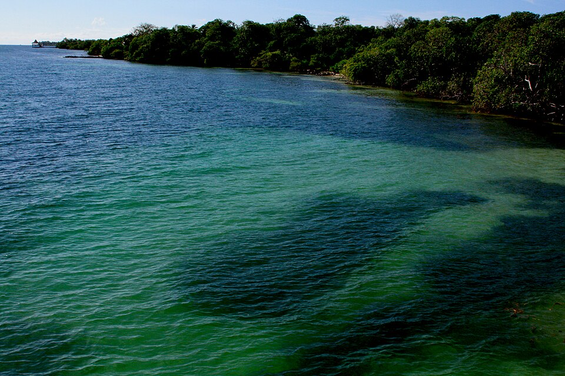
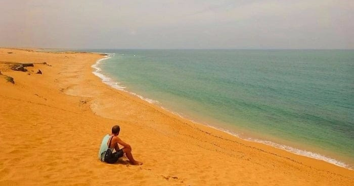
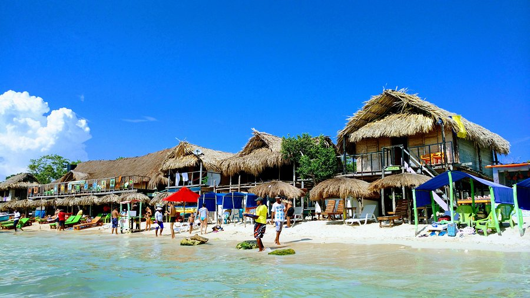
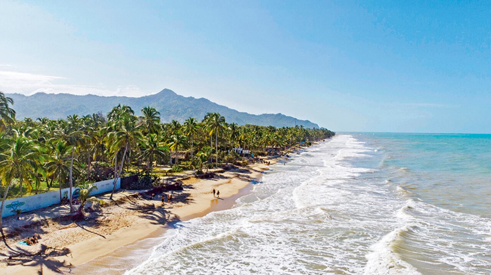

Parque Nacional Natural Tayrona

El Parque Nacional Tayrona, en el norte de Colombia, es una gran zona protegida
que abarca las laderas de la Sierra Nevada de Santa Marta en las zonas adyacentes
a la costa del Caribe. Es conocida por sus caletas cubiertas por palmeras,
lagunas costeras, selva tropical y una abundante biodiversidad. En su centro,
las ruinas del Pueblito son un sitio arqueológico al que se accede a través de
senderos en los bosques, con terrazas y estructuras construidas por la civilización tayrona
Se encuentra ubicado: en la costa Caribe de Colombia, en el departamento del Magdalena,
aproximadamente a 34-43 km al noreste de la ciudad de Santa Marta. Se extiende a los pies de
la Sierra Nevada de Santa Marta, donde la selva tropical se encuentra con el mar.
Ciudad Amurallada de Cartagena

Es la fortificación más conservada y completa de Sur América, y una de las mejores
murallas de las ciudades amuralladas del mundo. Recorre los 11 kilómetros que se
conservan del cordón amurallado, una de las más importantes atracciones de Cartagena,
declarada como Patrimonio Cultural de la Humanidad, un tesoro invaluable que no sólo
ha resistido los ataques de los invasores, del tiempo y la naturaleza.
Construidas para alejar a los enemigos, hoy en día las Murallas son un símbolo de
Cartagena, que invita a los viajeros a adentrarse en una ciudad llena de historia y
detalles únicos.
La Ciudad Amurallada de Cartagena queda en el centro histórico de Cartagena de Indias,
departamento de Bolívar, en la costa caribeña del norte de Colombia. Es el núcleo antiguo
de la ciudad, famoso por sus murallas del siglo XVI, calles empedradas y arquitectura colonial.
San Andrés Islas

Cerca de cuarenta sitios para bucear, unas de las mejores playas del Caribe, un mar azul pero que
también es verde y de tonos lila, y gente llena de amabilidad… esos son algunos de los encantos de
las islas de San Andrés, Providencia y Santa Catalina, ubicadas en el Caribe colombiano. El Archipiélago,
ubicado a unos 230 kilómetros al este de Centroamérica y a unos 750 kilómetros al norte del territorio
continental colombiano, fue declarado en el año 2000 Reserva Mundial de la Biosfera “Seaflower”.
Esta reserva no solo incluye las islas y sus cayos lejanos; además, conforma el 10% del mar Caribe,
con una extensión mayor a los 300 mil kilómetros cuadrados.
San Andrés es una isla perteneciente a Colombia, ubicada en el mar Caribe, que forma parte del archipiélago
de San Andrés, Providencia y Santa Catalina. Geográficamente, se encuentra más cerca de la costa de Nicaragua
(aprox. 130-180 km) que del territorio continental colombiano, del cual dista unos 700-775 km
Islas del Rosario y San Bernardo

El Parque Nacional Natural Corales del Rosario y de San Bernardo se encuentra ubicado en la Región Caribe
en Colombia. Su superficie hace parte del departamento de Bolívar, a unos 45 kilómetros al suroeste de la
bahía de Cartagena e incluido dentro de la jurisdicción de la misma. Por ser un parque mayoritariamente de
área marina, pertenecen a él ecosistemas únicos tales como arrecife de coral, humedales, manglares, playa
arenosa, litoral rocoso, fondo sedimentario, pradera de pastos marinos, formación xerofítica y formación
subxerofitica.
Las Islas del Rosario y San Bernardo son archipiélagos del Caribe colombiano situados en el departamento de
Bolívar, cerca de Cartagena de Indias. Forman parte del Parque Nacional Natural Corales del Rosario y de
San Bernardo. Se acceden principalmente en lancha desde el muelle La Bodeguita en Cartagena (aprox. 45-90 min).
Cabo de la Vela y Punta Gallinas

El Cabo de la Vela es un lugar maravilloso donde se encuentran playas vírgenes y paradisíacas,
también es un destino importante para la mitología Wayuu. En este lugar se encuentran sitios
sagrados como el Cerro Kamaichi o Jepirra, también es un centro turístico que atrae a muchos
deportistas interesados en el kitesurf y el windsurf.
El Cabo de la Vela y Punta Gallinas están ubicados en el extremo norte de Colombia,
en el departamento de La Guajira. Se encuentran en la península de La Guajira, sobre
la costa del Mar Caribe, siendo zonas desérticas caracterizadas por dunas, acantilados
y una cultura Wayúu.
Playa Blanca

Playa Blanca es una de las playas más famosas y visitadas cerca de Cartagena de Indias.
Se encuentra en la isla de Isla de Barú, aproximadamente a 45–60 minutos de Cartagena.
Playa Blanca se caracteriza por su arena blanca y aguas claras de color turquesa, lo
que la convierte en un destino turístico muy popular del Caribe colombiano. Es un lugar
ideal para descansar, nadar y disfrutar del paisaje natural.
Playa Blanca se encuentra en la isla de Barú, que pertenece al distrito de Cartagena
de Indias, en la costa del mar Caribe en Colombia. Está ubicada aproximadamente a 45
kilómetros al sur de Cartagena
Palomino

Palomino es un destino turístico natural donde los visitantes pueden disfrutar de playas,
ríos y paisajes de montaña. Es famoso por actividades como el tubing por el río Palomino,
caminatas y el contacto con la naturaleza cerca de la Sierra Nevada de Santa Marta.
Palomino está ubicado en el departamento de La Guajira, en la costa del mar Caribe, entre: Santamarta y Rioacha